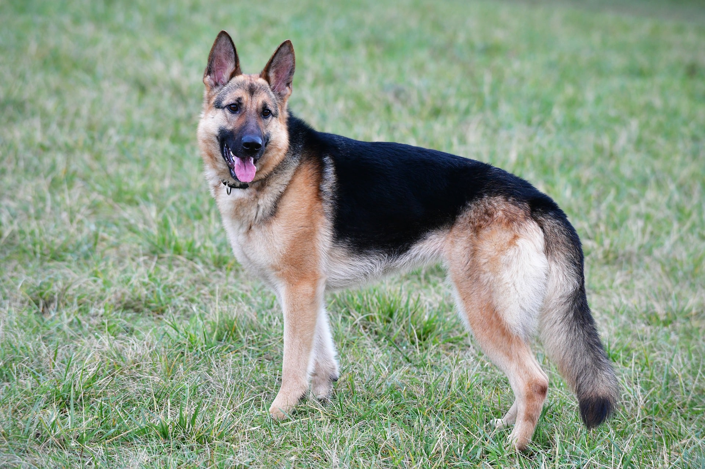

Pastor Alemán
INTRODUCCIÓN
El pastor alemán, también conocido como ovejero alemán, es una raza de perro pastor originaria de Alemania de tamaño mediano a grande.
La raza es relativamente nueva, ya que su origen se remonta a 1899.
Forman parte del grupo de pastoreo, ya que fueron perros desarrollados originalmente para reunir y vigilar ganado.
A continuación, veremos las principales características de este animal:
CARACTERÍSTICAS FÍSICAS
Aspecto general: robusto y flexible, ligeramente alargado, cuerpo musculoso, sus mandíbulas cierran en tijera. Es un perro de compañía ya que es un perro equilibrado, dócil y fácil de adiestrar.
Variantes de color en los pastores alemanes: negro sólido (manto totalmente negro), negro con manchas de color amarillas, rojas, marrones o gris claro, negro calzado (negro con las zona inferior de las patas de color amarillo, rojo, marrón o gris claro), sable (color gris combinado con amarillo, rojo o marrón). Las manchas blancas no son deseables, aunque pueden admitirse. La trufa siempre debe ser negra. Todos deben poseer una máscara negra, aquellos que carezcan de ella son considerados como ejemplares faltos de pigmentación.
TEMPERAMENTO
El pastor alemán es un perro ágil, inteligente y vigoroso, criado originalmente para pastorear ovejas y vacas. Su versatilidad le ha permitido desempeñar múltiples roles, como guardián, perro guía, policía, detector de drogas y perro de ataque. Es un animal bien proporcionado, fuerte y equilibrado, aunque su temperamento puede variar según su educación. Si bien es leal y trabajador, puede ser dominante o agresivo en ciertas circunstancias.
En algunos países, esta raza se considera potencialmente peligrosa debido a su fuerza y tamaño. Un estudio en EE.UU. identificó al pastor alemán como la raza con más mordeduras que requirieron hospitalización entre 1971 y 2018. En Australia, aunque aparece entre las razas con más ataques, su alta población reduce la tasa de incidentes en proporción.
Según National Geographic, la mordida de un pastor alemán ejerce más de 1.060 newtons de presión, similar a la de un pitbull y menor que la de un rottweiler. A pesar de estas cifras, su comportamiento depende en gran medida de la crianza y el adiestramiento que reciba. Su inteligencia y energía lo convierten en un perro dedicado al trabajo y altamente valorado en diferentes áreas de servicio y protección.

SALUD
El pastor alemán tiene una esperanza de vida de 10 a 12 años y es una de las razas con más problemas genéticos debido a la cría irresponsable. La displasia de cadera es un problema común en perros grandes, por lo que se recomienda adquirir cachorros en criaderos certificados, exigir su pedigrí y verificar antecedentes familiares de la enfermedad. Además, es fundamental realizar radiografías de cadera en la madurez del perro para garantizar su salud y aptitud reproductiva. El organismo encargado de regular la raza es el Verein für Deutsche Schäferhunde e.V. (SV) en Alemania.
El entrenamiento y socialización deben comenzar desde el momento en que el cachorro llega a casa para desarrollar un comportamiento equilibrado.
Otras enfermedades que pueden afectar a la raza incluyen la Enfermedad de Von Willebrand, un trastorno sanguíneo, y la deficiencia pancreática exocrina, que impide la producción de enzimas digestivas. Esta última requiere medicación de por vida, aunque el tratamiento no soluciona completamente el problema y es costoso.
Para evitar estos problemas de salud y garantizar un pastor alemán fuerte y sano, es clave la crianza responsable, revisiones veterinarias periódicas y una alimentación adecuada.
Regresar a pantalla principal